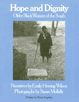

Twenty heart-felt narratives of survival and courage
Twenty heart-felt narratives of survival and courage


 Twenty heart-felt narratives of survival and courage
Twenty heart-felt narratives of survival and courage

|  |
Hope and DignityOlder Black Women of the Southnarrator Emily Herring Wilson, photographs by Susan Mullally Clark, preface by Maya Angeloupaper EAN: 978-1-56639-017-0 (ISBN: 1-56639-017-6) |
Philadelphia Book Clinic Certificate of Award, 1984
"[This] excellent book offers moving portraits of women whose lives have previously received little notice. Their attainments deserve to be recorded, for their sake and as a demonstration of how a repressed people live with dignity and hope."
—Philadelphia Inquirer
From the Foreword by Maya Angelou
In Hope and Dignity Emily Wilson and Susan Mullally have offered some answers to the question of Black survival. Wilson, a good and recognized poet, traveled her adopted State of North Carolina (she is originally from Georgia) talking to older Black women and listening to their responses. Interestingly, the women collected in this book appear to be speaking more to their ancestors and even to their unborn progeny than to Emily Wilson and therein must lie the book's success. For, since Wilson is White, it is natural to suspect anything Black people might say to her. (There is the old saying among Blacks: "If white people ask you where you are going tell them where you've been.") It is a compliment to Wilson to say that she was wise enough to pose her questions then stand aside so that the women could reflect privately on the pasts they have lived and even those they wished they had lived.
Mullally's photographs are inspired and to the point. She has demonstrated as much sensitivity as Wilson and an equal amount of poetic curiosity.
The subjects appear, as out of a mist, suddenly clear and clearly mistresses of their real and imagined times. They have overcome the cruel roles into which they had been cast by racism and ignorance. They have wept over their hopeless fate and defied destiny by creating hope anew. They have nursed, by force, a nation of hostile strangers, and wrung from lifetimes of mean servitude and third class citizenship a dignity of indescribable elegance.
"If I had it to do over," Mrs. Bryant explains, "I would just as soon have the days of back yonder as today. I had. But I'm sure the children can have so much more and so much more easier till this is better days for living but not the kind of living we was brought up with. We had time to visit each other, and had time to go see the sick and didn't have no thoughts of putting nobody in the rest home. Maybe if there was four or five working on the farm, one could stay at the house and wait on that sick person. And it didn't put no bigger strain on them. Now it seems like they have keyed up themselves for fine houses, fine furniture, fine cars, fine everything until it takes them both to work [the wife and the husband]. But used to if the man had to be sick, the woman with the neighbor's aid could carry on. Or if the woman had to be sick, the neighbors would help do the chopping or do whatever she had been doing till she could get well. Now there's no way that no one hardly, the way they've got themselves stretched out for wanting so much, that they can carry on as well as we did. When mother stays at home with the children and works with them, like I did, you near about know them. No way hardly they can fool you or nothing. I'm not giving myself no pat, but nobody worked more hours than I did."
These women are teachers comprehensively. Their accounts inform us that while life in North Carolina and in all the United States, has been hard for the Black woman (and man and child) it can be borne with dignity, and it can be changed by hope. Salutes to Wilson and Mullally, and humble thanks to all the women collected in this book. I understand them. They are my grandmothers.
"Hope and Dignity proves that there can be trust and truth between women; that a brutally racist society can damage but not completely deaden the giving heart."
—Women's Review of Books
"An overlooked chapter in American black history earns fresh attention in Hope and Dignity.... Highly recommended."
—Los Angeles Times
"I haven't been so touched since reading Studs Terkel's Hard Times. The voices of Mrs. Wilson's women are so authentic and eloquent that I kept wishing to have been along with the documentarian's camera, to capture their faces as they told their stories."
—Bill Moyers
"These are warm and heartening oral autobiographies."
—Booklist
"This moving oral history examines the lives of 20 extraordinary older black women from North Carolina. By letting her subjects speak largely for themselves, Wilson creates a varied and inspiring tapestry.... Sensitive photographs acompany each chapter.... Highly recommended."
—Library Journal
"Utilizing oral history interviews and sensitive photographs, the compilers have reconstructed for readers the lives and characters of 27 elderly black women in the South from all walks of life. The result is less a story of victimization than it is a celebration of human courage, persistence, and nobility."
—Journal of Southern History
"This book is inspiring. Black women [born]... 60, 70, and 80 years ago had seemingly insurmountable obstacles, but here are some who overcame much. These women are impressive, and this is a needed chronicle.... Hope and Dignity is a hymn to the human spirit."
—Winston-Salem Journal
Foreword
Acknowledgments
Introduction
1. Precious Lord, Take My Hand
2. One Dime Blues
3. Green Animals around the Moon
4. mid·wife
5. Cool Buttermilk, Brown Gravy, and No Chickens under the House: A Dream
6. Esse Quam Videri
7. In This Dark World and Wide
8. Sisters
9. Taking Low to No One
10. Ivory Towers and No Sidewalks
11. Seeing a Thing Through
12. As Long as You Give Us the Equal
13. A Woman on Wall Street
14. Mademoiselle
15. "...For Peace and Justice, Freedom and Dignity for All People"
16. You Follow Me?
17. I Was Glad When They Said unto Me, "We Will Go into the House of the Lord"
18. When the Sun Goes Down, You're in a Valley like This, and You Can Look Up to the Top and See the Sunrise
19. The Little Country Church
20. The World Can't Take It Away
Epilogue
Emily Herring Wison is a writer in Wonston-Salem, North Carolina. She is working with Margaret Supplee Smith on a history of women in North Carolina.
Susan Mullally Clark is a photographer in Greensboro, North Carolina, who is currently working on a photographic study of brothers and sisters. Wilson and Clark traveled more than 20,000 miles through the South in the course of interviewing, lecturing, and photographing for Hope and Dignity.
African American Studies
Women's Studies
© 2015 Temple University. All Rights Reserved. This page: http://www.temple.edu/tempress/titles/311_reg.html.